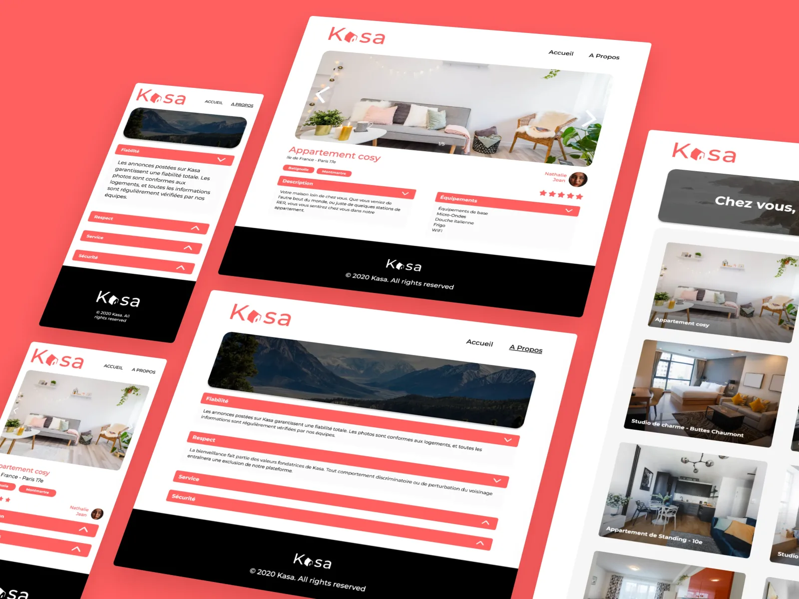
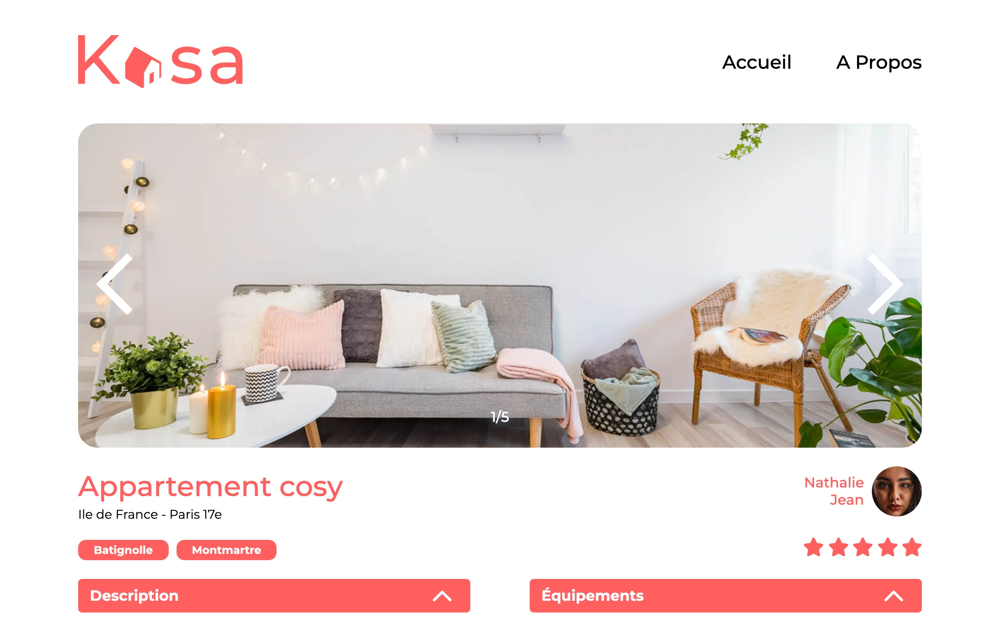
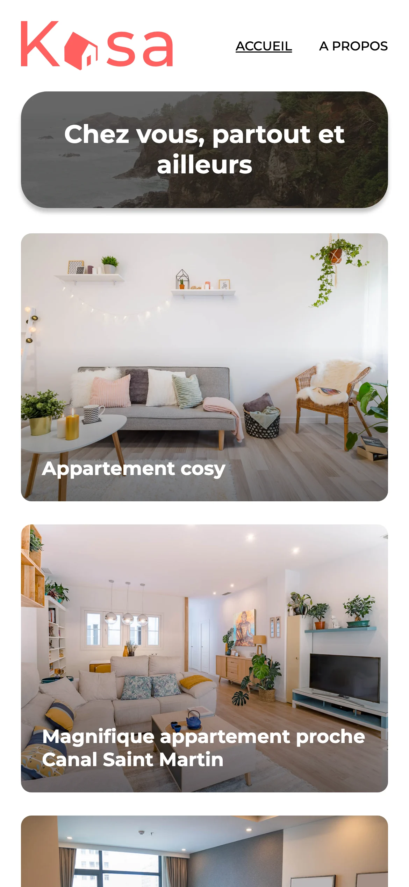
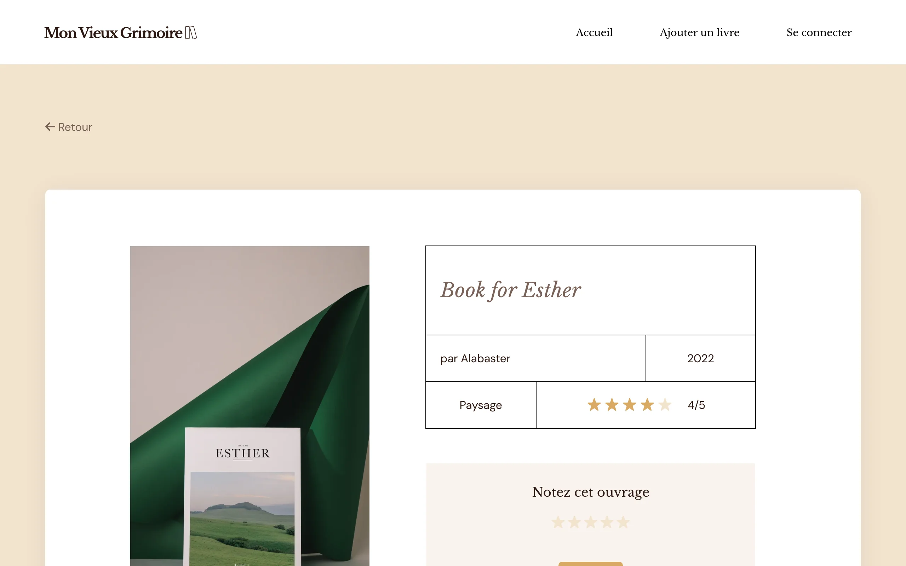

Qui je suis
- Développeur full-stack
- Le sport, à La Réunion
- Des tâches répétitives
- Un script qui range
- Le déclic
Raphaël Grondin
L'interface
React

L'API
Node.js
- Accessibilité
- Performances
Responsable d'un club de fitness
Coach sportif
La Réunion
-
Le suivi des adhérents
-
Les relances clients
-
Les rapports
JSGoogle Apps Script
- Google Sheets
- Gmail
Demande d'inscription
Bonjour,
Julie Martin a fait une demande d’inscription sur notre site.
Vous pouvez la joindre au +2620692123456 ou par e-mail à julie.martin@example.com.
Elle a indiqué « Remise en forme » comme objectif. Merci de la recontacter.
Google Sheets
Automatiser ce qui faisait perdre du temps
à moi et à mes collègues
Le développement
La stack
Full-Code
Un outil pour chaque besoinD’où je pars
Ma formation
Développeur webOù je vais
Les postes
que je vise
TypeScript
Les erreurs dans l’éditeur, avant le navigateur
export type Project = {
id: string;
title: string;
cover: string;
// autres champs…
};{
"id": "kasa",
"title": "Kasa",← champ oublié
"cover": "/projets/kasa/cover.webp"
}const projects: Project[] = data;⚠ La propriété « title » est absenteLe type décrit ce qu’un projet doit contenir
Vite
Démarrer vite en développement
❯ npm run dev
✓ Serveur prêt
localhost:5173✓ Build terminé
dist/localhost:5173
Version optimisée
Le site prêt à être publié
- ✓Regroupé : un seul fichier JS, un seul CSS
- ✓Minifié : sans espaces ni commentaires
- ✓Le code inutilisé, retiré
Sass
Écrire une fois, réutiliser dans les composants
$glass-blur: 22px;
@mixin glass {
backdrop-filter: blur($glass-blur);
}Une valeur partagée · un bloc de styles réutilisable
@include glass(…)@include glass(…)@include glass(…)React Router
Une adresse pour chaque projet
/projet/:id

- React
 TypeScript
TypeScript Vite
Vite- Sass
- React Router
Deux projets de formation
KasaP05
Mon Vieux GrimoireP06
Front-end
Mon profilFull-Stack
Back-end
Kasa
P05 · 2026 · Front-end
Une application de location en React, pensée composant par composant

Location de logements entre particuliers
Kasa — Desktop
Une maquette Figma
Un jeu de données JSON
Ma mission
L’application front-end en React
TypeScript✓ En ligne, fidèle à la maquette

✓ Sur mobile aussi
Le carrousel, d'un glissement du doigt
Sur mobileÀ venirDes filtres sur l'accueil
Par équipement ou par quartierÀ venir- Contexte
- La stack
- Réalisation
- Résultat
- À améliorer
Mon Vieux Grimoire
P06 · 2026 · Back-end
L’API d’un site de notation de livres

Un site de notation de livres

Ce que le front attend
- POST
/api/auth/signup - POST
/api/auth/login - GET
/api/books - GET
/api/books/:id - GET
/api/books/bestrating - POST
/api/books - PUT
/api/books/:id - DELETE
/api/books/:id - POST
/api/books/:id/rating
Respecté à la lettre
Node.jsExpressNe jamais faire confiance
au navigateur
Modifiable dans la console
Le token signéreq.auth.userId
Sinon, n’importe qui pourrait publier au nom d’un autre
/api/auth/signup201/api/auth/login200/api/books200/api/books201/api/books/:idLe livre d’un autre → "unauthorized request"403✓ Refusé/api/books/:id/ratingUne note de 6 → "rating must be between 0 and 5"400✓ RefuséUne démo publique
Front sur Vercel · API sur AlwaysdataStocker les images sur un service dédié
Par exemple Cloudinary ou Amazon S3À venirLimiter les tentatives de connexion
Par exemple avec express-rate-limitÀ venir- Contexte
- L’enjeu
- La stack
- Ma règle
- Résultat
- À améliorer
Au-delà des consignes
Projet personnel
GymTracker iPhone et Apple Watch- ✓ Reconnaît l’exercice
- ✓ Compte les répétitions
Chef de produit
Testeur
enregistrements collectés moi-même
5,9 h de mouvementUne séance qu’elle n’avait jamais vue
23 / 24 séries reconnuesDe ma propre initiative
En ligneoc-sophie-bluel-react-version.vercel.app
Un commit par étape
❯ git log --oneline
e22a10c Apply minor content updates
87b8da7 Turn hero star into a CV badge
762ce76 Add CV buttons in hero and contact
… 44 commits
Un journal : chaque décision, sa raison
journal-technique.md
## Le design system en Sass
### Pourquoi
- Les variables avant les composants, parce que le design était déjà décidé
Une variante sur une branche Git
Le badge du CV : testé à part, puis gardé
- GymTracker
- Sophie Bluel en React
- Méthode